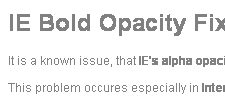

It is a known issue, that IE's alpha opacity ruins bold text.
This problem occures especially in Internet Explorer 8 running on Windows XP.
If you're using MSIE 8 the header above and all bold text on this website will look like this:

This problem persists even if opacity is set to 100.
This is demonstration how it works with filter: progid:DXImageTransform.Microsoft.gradient.
jquery.IEBoldOpacityFix.js works even on elements with parents with no or transparent backgrounds.